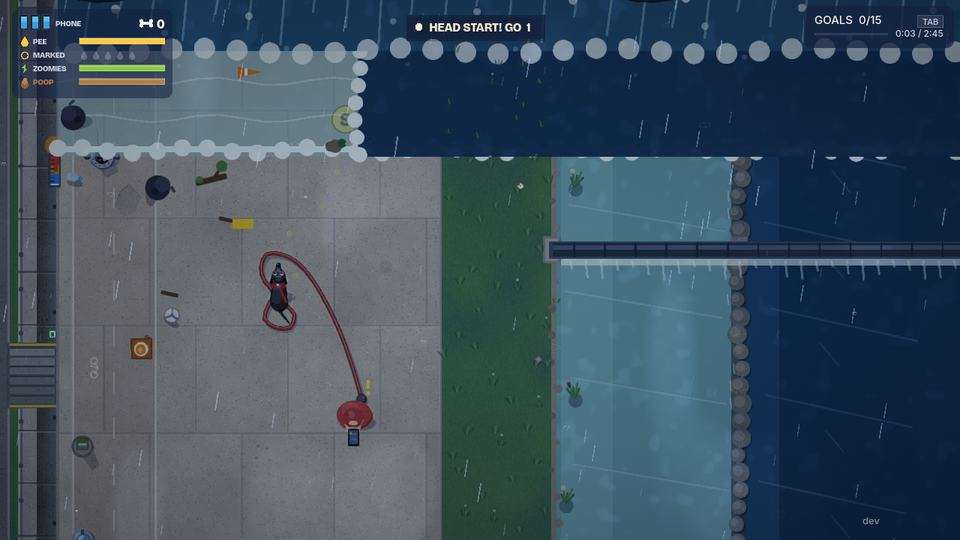
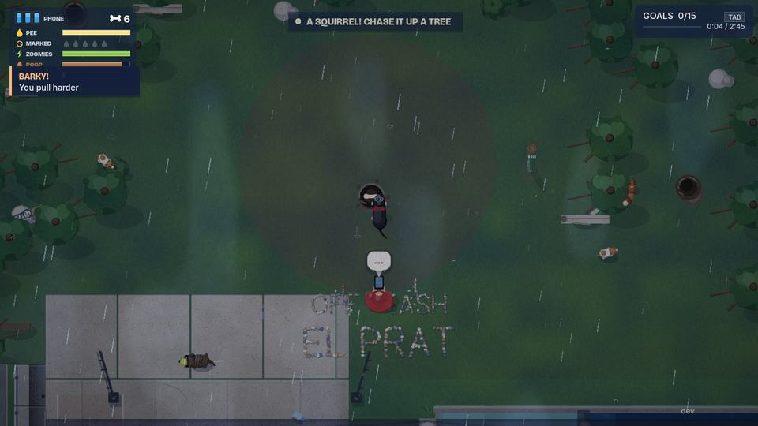

El Besòs
The river park that floods
The concrete-banked river park along the Besòs during heavy rain, where paved cycling paths hug the water channel beside weirs and flood walls. Reach the clearing at El Prat and the swollen flood front breaks loose behind you for the sprint home.
- Off-leash stop
- EL PRAT (Wooded clearing)
- Beat the clock
- Under 2:45
- Turnaround warning
- THE RIVER'S UP! HEAD FOR HOME
Screenshots





Goals (15)
- Mark 5 spots
- Have 4 good long sniffs
- Get the phone home without a scratch
- Get yourself home without a bump
- Get your business bagged
- Bring the ball back 3 times
- Splash through the shallows 4 times
- Scarf down 2 dropped snacks
- Land an x3 trick combo
- Fetch the ball from beside the path
- Keep the deep flood front a leash length away
- Get your human home mostly dry
- Spell LEASH
- Find the hidden pernil
- Beat the clock (under 2:45)